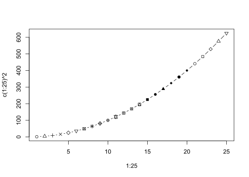

sequenceDiagram
participant Alice
participant Bob
Alice->>John: Hello John, how are you?
loop Healthcheck
John->>John: Fight against hypochondria
end
Note right of John: Rational thoughts <br/>prevail!
John-->>Alice: Great!
John->>Bob: How about you?
Bob-->>John: Jolly good!
8 动态报告语法格式
https://quarto.org/docs/guide/
1 基础
| output | syntax | |
code |
` code ` | |
| 粗体 | **粗体** |
|
| 斜体 | *斜体* |
|
| 下横线 | [下横线]{.underline} |
|
~~删除线~~ |
||
| 上标X2 | X^2^ |
|
| 下标 X1 | X~1~ |
|
| SAMALL small caps | 与小写字母同等高度的大写字母 [small caps]{.smallcaps}
|
|
| https://r4ds.hadley.nz/ | <https://r4ds.hadley.nz/> |
|
| quarto | [quarto](https://quarto.org) |
|
| |
||
|
> Blockquote |
任务列表
2 Execute chunk
| Option | Default | Effects |
|---|---|---|
echo |
true |
|
eval |
true |
false: don’t run code |
include |
true |
false: don’t include code or results |
output |
true |
|
warning |
true |
false: don’t include warnings in output |
error |
false |
true: include error in output and continue with render |
2.1 图


如左图 图 8.1 (a) 所示，点有25种不同的形状，
右图 图 8.1 (b) 所示。
2.1.1 流程图
EDA
引用章节： Section 8.2.1.1.1 and Section 8.4
引用图片 图 8.3 shows two histograms displaying the distributions of price and area individually.
直方图
ggplot(mpg, aes(cty)) +
geom_histogram() +
labs(title = "Histogram of cty")
ggplot(mpg, aes(x =hwy)) +
geom_histogram() +
labs(title = "Histogram of hwy")
ctys

hwys
3 表格
表 8.1 displays basic summary statistics for these two variables.
4 公式
Black-Scholes (式 8.1) is a mathematical model that seeks to explain the behavior of financial derivatives, most commonly options:
\[ \frac{\partial \mathrm C}{ \partial \mathrm t } + \frac{1}{2}\sigma^{2} \mathrm S^{2} \frac{\partial^{2} \mathrm C}{\partial \mathrm C^2} + \mathrm r \mathrm S \frac{\partial \mathrm C}{\partial \mathrm S}\ = \mathrm r \mathrm C \tag{1}\]
We can fit a simple linear regression model of the form shown in 式 8.2.
\[ price = \hat{\beta}_0 + \hat{\beta}_1 \times area + \epsilon \tag{2}\]
5 callouts
notewarningimportanttipcaution
Note
This is a pretty incomplete analysis, but hopefully the document provides a good overview of some of the authoring features of Quarto!
Tip 1: 交叉引用 a Tip
Add an ID starting with #tip- to reference a tip.
See Tip 8.1…
| 标注类型 | 前缀 |
|---|---|
note |
#nte- |
tip |
#tip- |
warning |
#wrn- |
important |
#imp- |
caution |
#cau- |
6 Blockquote
qwert
asfg
7 LaTex
7.1 公式对齐
\[\begin{aligned} f(x) =& \sum_{k=0}^\infty \frac{1}{k!} x^k \\ =& e^x \end{aligned}\]
7.2 括号等高
\[\phi(x) = \frac{1}{\sqrt{2\pi}} \exp\left\{ \frac{1}{2} x^2 \right\} \]
7.3 矩阵
\[ \begin{bmatrix} x_{11} & x_{12}&...&x_{1p} \\ x_{21} & x_{22}&...&x_{2p} \\ \vdots &\vdots & &\vdots\\ x_{n1} & x_{n2}&...&x_{np} \\ \end{bmatrix} \]
7.4 向量表示
\[ \boldsymbol{v} = (v_1, v_2)^T \]
8 定理类段落
- 术语
-
定义：三角形的内角和等于180°。
或者
引用Theorem 8.1。
Theorem 1 (勒贝格定理) 一元函数黎曼可积， 当且仅当其不连续点的集合为零测集。
| 环境名 | 默认显示名 | 标签前缀 |
|---|---|---|
| theorem | Theorem | #thm- |
| lemma | Lemma | #lem- |
| corollary | Corollary | #cor- |
| proposition | Proposition | #prp- |
| conjecture | Conjecture | #cnj- |
| definition | Definition | #def- |
| example | Example | #exm- |
| exercise | Exercise | #exr- |
9 代码块
9.1 syntax highlight
1 + 1x = "abcde"9.2 raw content
- Description List
- 主题
- 描述
9.3 Inline Code
Use computed values directly in text sections. Code is evaluated at render and results appear as text.
9.3.1 Knitr
Value is .4
9.3.2 Jupyter
Value is .`{python} 2 + 2`
9.3.3 Output
Value is 4.